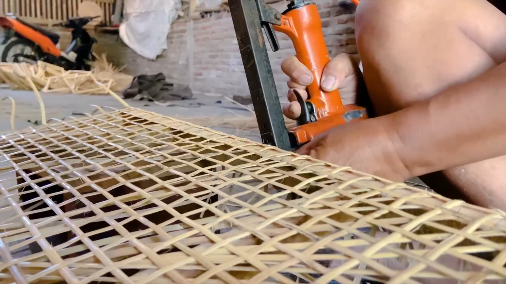
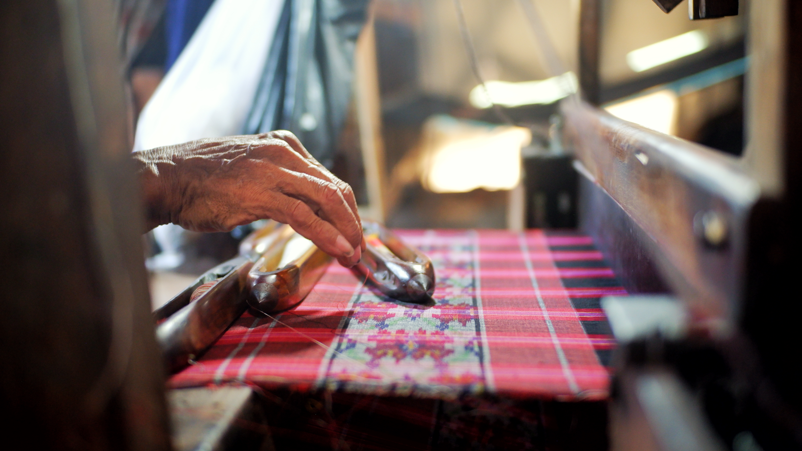
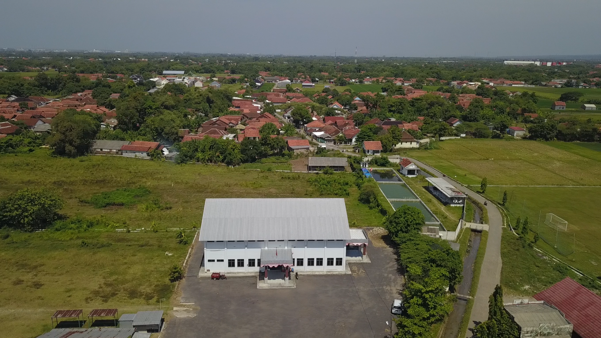
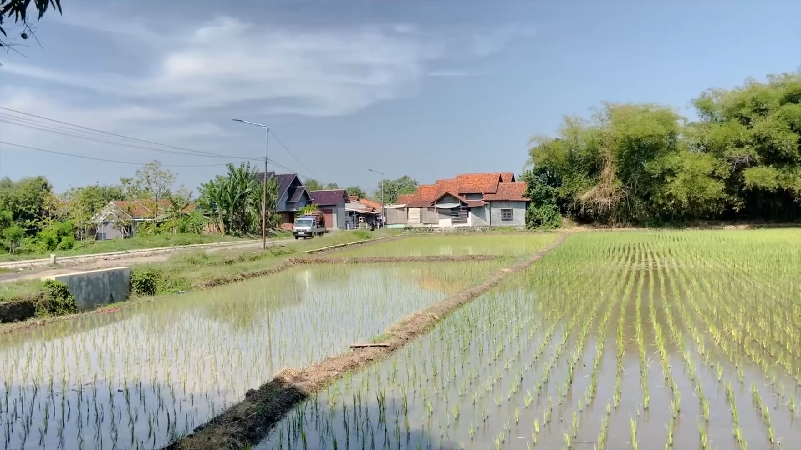
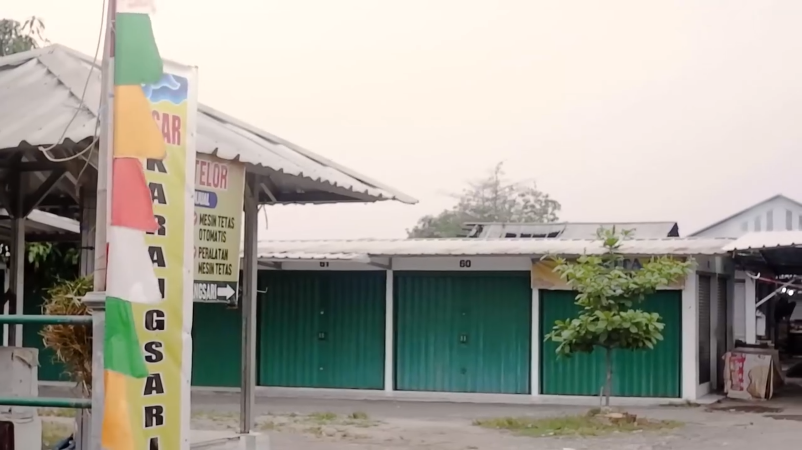
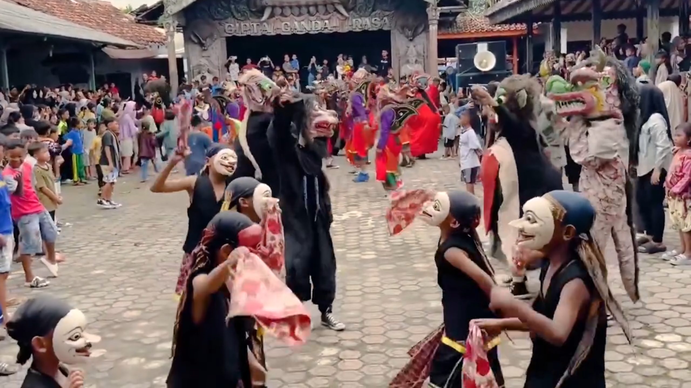

.png)
.png)
.png)
Sejarah Singkat Karangsari
Terbentuknya Desa Karangsari yang terletak di ujung barat Kecamatan Weru memiliki akar sejarah yang cukup panjang dan bermula jauh sebelum tahun 1905. Pada masa lampau, wilayah ini awalnya dikenal dengan nama Desa Bode Kidul. Kala itu, pusat pemerintahan desa atau balai desanya menempati lokasi yang berhadapan secara langsung dengan wilayah Desa Bode Lor.
Seiring berjalannya waktu serta perkembangan wilayah, pusat pemerintahan desa kemudian mengalami perpindahan lokasi ke kawasan Blok Megulu. Bersamaan dengan kepindahan pusat pemerintahan tersebut, nama desa ini resmi berganti menjadi Desa Karangsari yang dikenal oleh masyarakat luas hingga saat ini.
Selain perjalanan administratifnya, Desa Karangsari juga memiliki ikatan historis dan spiritual yang sangat kuat dengan seorang tokoh terkemuka. Desa ini pernah menjadi tempat perjuangan seorang tokoh pejuang kemerdekaan sekaligus penyebar agama Islam di Cirebon, yaitu Kiai Ishak Al-Maksyur yang juga dikenal sebagai pendiri Pondok Pesantren Mukasyafaah Arifin Billah Karangsari.
Batas Wilayah Administratif
Secara geografis, ruang lingkup wilayah Desa Karangsari berdampingan langsung dengan beberapa kawasan desa dan kelurahan di sekitarnya:
Berbatasan langsung dengan wilayah Desa Bodesari / Bode Lor (Kecamatan Plumbon).
Berbatasan langsung dengan wilayah Kelurahan Pasalakan (Kecamatan Sumber).
Berbatasan langsung dengan wilayah Desa Kertasari & Desa Megu Cilik.
Berbatasan langsung dengan wilayah Desa Pamijahan & Marikangen (Kecamatan Plumbon).
Potensi Desa

Kerajinan Rotan

Kerajinan Kain Tenun

Pembuatan Tahu Jelawe

Krupuk Khas Karangsari
.

Pembuatan Sujen / Tusuk Sate

Pasar Malam Minggu

Sektor Olahraga

Sektor Pertanian

Sektor Perdagangan
Situs Bersejarah & Kesenian Tradisional
Sebagai desa yang kaya akan warisan leluhur, Karangsari merawat berbagai situs bersejarah serta melestarikan seni budaya tradisional[cite: 2].

Tajug Gede

Sumur Pitu

Sumur Tanjung

Kendang Pencak Cipta Ganda Rasa
